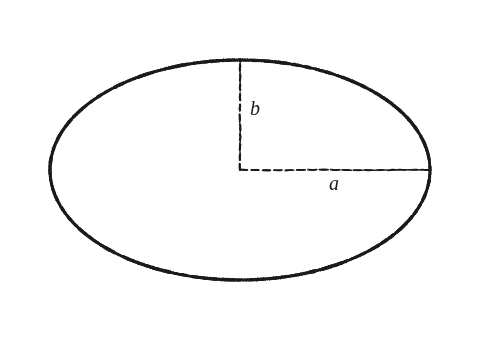
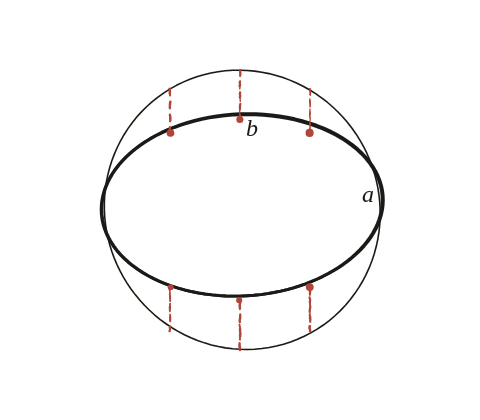

Quina és l'àrea d'una el·lipse?

Una eina nova: la dilatació
Una el·lipse de semieixos a i b es pot obtenir a partir d'un cercle de radi a estirant-lo verticalment per un factor k=b/a. Si es descobreix com canvia l'àrea de qualsevol figura quan s'estira així, s'obté directament la resposta.
Tallar en franges primes
Es talla mentalment el cercle en franges verticals molt primes. En estirar-lo verticalment per un factor k, cada franja canvia d'alçada per aquest mateix factor k, però la seva amplada horitzontal no canvia gens —l'estirament és només vertical.

Cada franja, i després la suma
L'àrea d'una franja rectangular prima és amplada×alçada. Com que l'amplada no canvia i l'alçada es multiplica per k, l'àrea de cada franja es multiplica per k. I com que l'àrea total de la figura és la suma de totes les franges, si cadascuna es multiplica per k, la suma sencera també es multiplica per k.
Aplicar-ho al cercle
L'àrea del cercle de radi a és πa². Multiplicant-la pel factor k=b/a: àrea de l'el·lipse = πa²·(b/a) = πab.
Àrea de l'el·lipse = πab. Surt de veure l'el·lipse com un cercle de radi a estirat verticalment per un factor k=b/a, i d'observar que aquest estirament multiplica l'àrea de qualsevol figura —franja a franja— pel mateix factor k.
Comprovació
Amb a=5, b=3: àrea=π×5×3=15π≈47,12. Cas particular b=a (l'"el·lipse" és el cercle mateix): πa·a=πa², coincidint amb la fórmula coneguda del cercle.